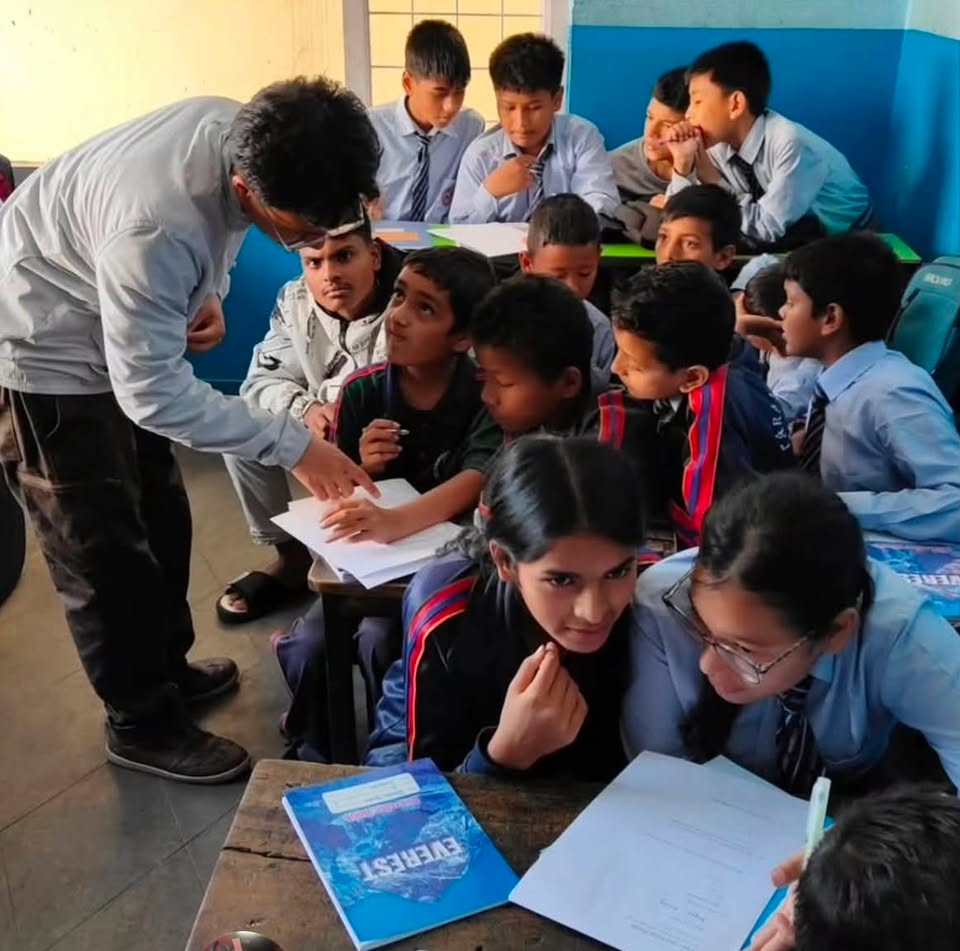
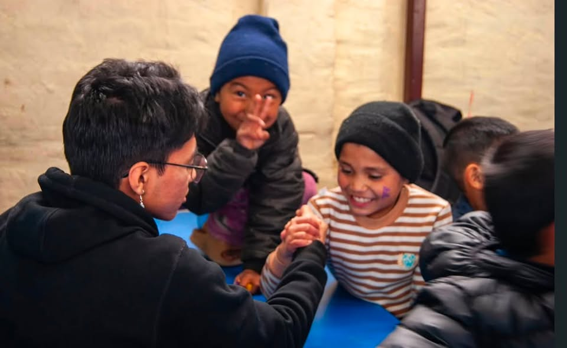
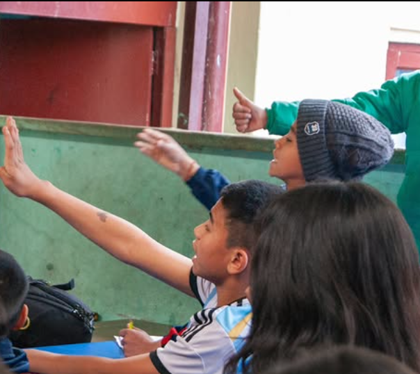

who we are



We are a group of students who are passionate about inclusion and accessibility. Every day, countless individuals navigate a world that wasn't built with them in mind. We saw the barriers—both visible and invisible—that prevented people from being heard, understood, and truly included in our communities.
Project See The Voices is student-led, focused on teaching and spreading awareness about sign language and deaf culture. We started this initiative because we believed that communication shouldn't be a privilege. Language is a human right, and every person deserves to be part of the conversation, no matter how they choose to communicate.
out in the world
Three recent stops from our growing collection of conversations.